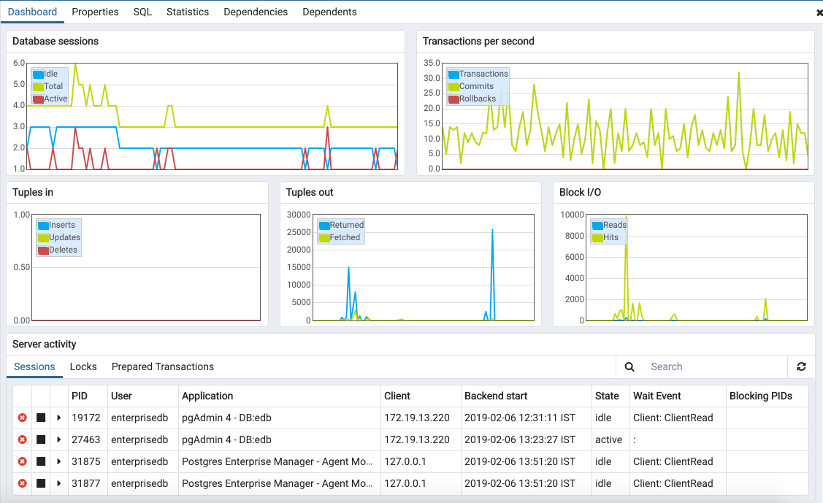
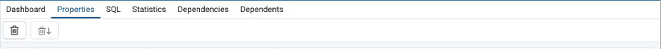
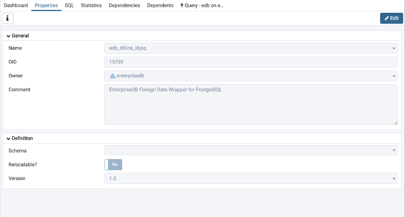
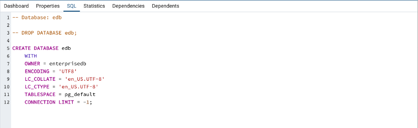
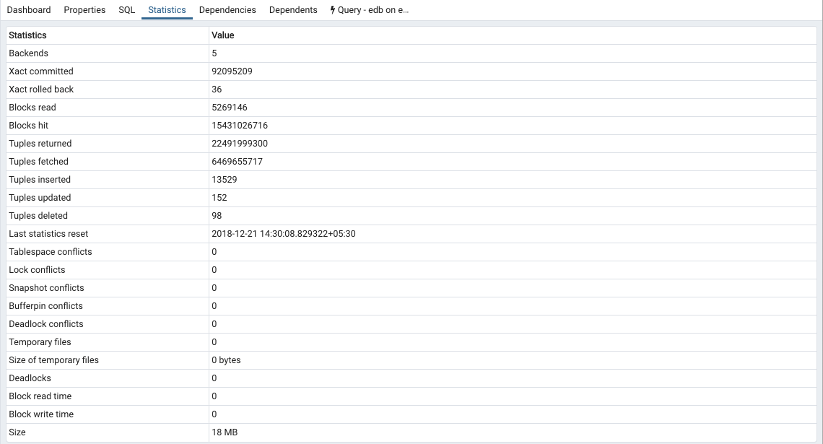

Tabbed Browser¶
The right pane of the pgAdmin window features a collection of tabs that display information about the object currently selected in the pgAdmin tree control in the left window. Select a tab to access information about the highlighted object in the tree control.
The graphs on the Dashboard tab provides an active analysis of the usage statistics for the selected server or database:
The Server sessions or Database sessions graph displays the interactions with the server or database.
The Transactions per second graph displays the commits, rollbacks, and total transactions per second that are taking place on the server or database.
The Tuples in graph displays the number of tuples inserted, updated, and deleted on the server or database.
The Tuples out graph displays the number of tuples fetched and returned from the server or database.
The Block I/O graph displays the number of blocks read from the filesystem or fetched from the buffer cache (but not the operating system’s file system cache) for the server or database.
The Server activity panel displays information about sessions, locks, prepared transactions, and server configuration (if applicable). The information is presented in context-sensitive tables. Use controls located above the table to:
Click the Refresh button to update the information displayed in each table.
Enter a value in the Search box to restrict the table content to one or more sessions that satisfy the search criteria. For example, you can enter a process ID to locate a specific session, or a session state (such as idle) to locate all of the sessions that are in an idle state.
You can use icons in the Sessions table to review or control the state of a session:
Use the Terminate icon (located in the first column) to stop a session and remove the session from the table. Before the server terminates the session, you will be prompted to confirm your selection.
Use the Cancel icon (located in the second column) to terminate an active query without closing the session. Before canceling the query, the server will prompt you to confirm your selection. When you cancel a query, the value displayed in the State column of the table will be updated from Active to Idle. The session will remain in the table until the session is terminated.
Use the Details icon (located in the third column) to open the Details tab; the tab displays information about the selected session.
The Properties tab displays information about the object selected.
Click the Delete icon in the toolbar under the browser tab to delete the selected objects in the Properties panel.
Click the Drop Cascade icon in the toolbar under the browser tab to delete the selected objects and all dependent objects in the Properties panel.
Click the Edit icon in the toolbar under the browser tabs to launch the Properties dialog for the selected object.
To preserve any changes to the Properties dialog, click the Save icon; your modifications will be displayed in the updated Properties tab.
Details about the object highlighted in the tree control are displayed in one or more collapsible panels. You can use the arrow to the left of each panel label to open or close a panel.
The SQL tab displays the SQL script that created the highlighted object, and when applicable, a (commented out) SQL statement that will DROP the selected object. You can copy the SQL statements to the editor of your choice using cut and paste shortcuts.
The Statistics tab displays the statistics gathered for each object on the tree control; the statistics displayed in the table vary by the type of object that is selected. Click a column heading to sort the table by the data displayed in the column; click again to reverse the sort order. The following table lists some of the statistics that are available:
Panel |
Description |
|---|---|
PID |
The process ID associated with the row. |
User |
The name of the user that owns the object. |
Database |
displays the database name. |
Backends |
displays the number of current connections to the database. |
Backend start |
The start time of the backend process. |
Xact Committed |
displays the number of transactions committed to the database within the last week. |
Xact Rolled Back |
displays the number of transactions rolled back within the last week. |
Blocks Read |
displays the number of blocks read from memory (in megabytes) within the last week. |
Blocks Hit |
displays the number of blocks hit in the cache (in megabytes) within the last week. |
Tuples Returned |
displays the number of tuples returned within the last week. |
Tuples Fetched |
displays the number of tuples fetched within the last week. |
Tuples Inserted |
displays the number of tuples inserted into the database within the last week. |
Tuples Updated |
displays the number of tuples updated in the database within the last week. |
Tuples Deleted |
displays the number of tuples deleted from the database within the last week. |
Last statistics reset |
displays the time of the last statistics reset for the database. |
Tablespace conflicts |
displays the number of queries canceled because of recovery conflict with dropped tablespaces in database. |
Lock conflicts |
displays the number of queries canceled because of recovery conflict with locks in database. |
Snapshot conflicts |
displays the number of queries canceled because of recovery conflict with old snapshots in database. |
Bufferpin conflicts |
displays the number of queries canceled because of recovery conflict with pinned buffers in database. |
Temporary files |
displays the total number of temporary files, including those used by the statistics collector. |
Size of temporary files |
displays the size of the temporary files. |
Deadlocks |
displays the number of queries canceled because of a recovery conflict with deadlocks in database. |
Block read time |
displays the number of milliseconds required to read the blocks read. |
Block write time |
displays the number of milliseconds required to write the blocks read. |
Size |
displays the size (in megabytes) of the selected database. |
The Dependencies tab displays the objects on which the currently selected object depends. If a dependency is dropped, the object currently selected in the pgAdmin tree control will be affected. To ensure the integrity of the entire database structure, the database server makes sure that you do not accidentally drop objects that other objects depend on; you must use the DROP CASCADE command to remove an object with a dependency.
The Dependencies table displays the following information:
The Type field specifies the parent object type.
The Name field specifies the identifying name of the parent object.
The Restriction field describes the dependency relationship between the currently selected object and the parent:
If the field is auto, the selected object can be dropped separately from the parent object, and will be dropped if the parent object is dropped.
If the field is internal, the selected object was created during the creation of the parent object, and will be dropped if the parent object is dropped.
If the field is normal, the selected object can be dropped without dropping the parent object.
If the field is blank, the selected object is required by the system, and cannot be dropped.
The Dependents tab displays a table of objects that depend on the object currently selected in the pgAdmin browser. A dependent object can be dropped without affecting the object currently selected in the pgAdmin tree control.
The Type field specifies the dependent object type.
The Name field specifies the identifying name for the dependent object.
The Database field specifies the database in which the object resides.
Additional tabs open when you access the extended functionality offered by pgAdmin tools (such as the Query tool, Debugger, or SQL editor). Use the close icon (X) located in the upper-right corner of each tab to close the tab when you are finished using the tool. Like permanent tabs, these tabs may be repositioned in the pgAdmin client window.
By default, each time you open a tool, pgAdmin will open a new browser tab. You can control this behavior by modifying the Display node of the Preferences dialog for each tool. To open the Preferences dialog, select Preferences from the File menu.